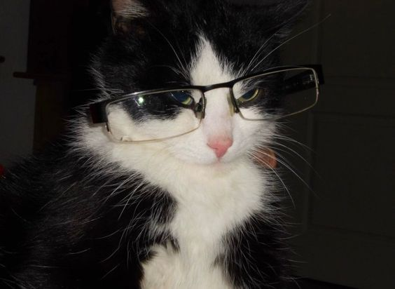

I am a senior at Kutztown University of Pennsylvania, and I will be graduating in
December 2026 with a BFA in Communication Design. I have a concentration in interactive
design, specifically web development. I have a lot of experience with freelance web design for
blogs, portfolios, and more. My extensive background of site development has honed my skills
in many coding languages, including HTML/CSS, JavaScript, and Python. My skills cover both
frontend and backend development, allowing me to create unique, responsive, and memorable
websites for a number of different purposes.
I find something deeply compelling about the intersection of code and human
experience, and that fascination has been a driving force in my work. My code has been
featured in Kutztown University’s Creative Code exhibition, where students used p5js to code an
interactive gallery piece. Having my work displayed was a meaningful milestone, but what
stayed with me was watching guests engage with something I had built. That feeling is what
pushes me to keep experimenting and asking how technology can help us.